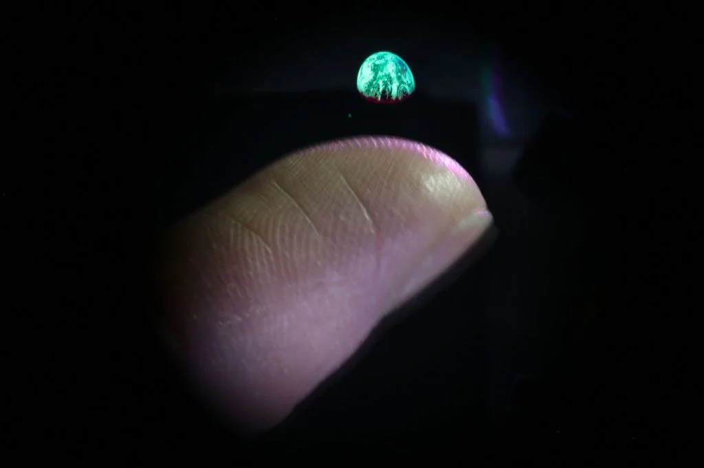

Hologramas são, basicamente, imagens tridimensionais obtidas
a partir de uma projeção de luz sobre figuras bidimensionais.
A coisa é possível através do processo da holografia, que se
aproveita das propriedades ondulatórias da luz. E a tecnologia
usada pela equipe da Universidade Brigham Young foi chamada de
“photophoretic-trap volumetric display” (algo que pode ser traduzido
como "display volumétrico com armadilha fotoforética"), conseguindo
fazer o que tentativas anteriores de se criar um holograma não
conseguiram:capturar a luz no meio do ar para criar um objeto virtual
com a mesma profundidade do real. |

|